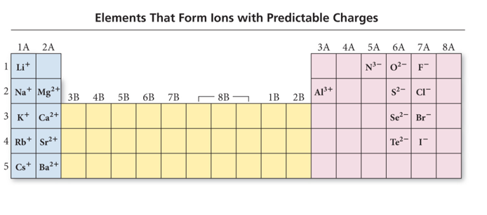

Week 5 - Day 3
Navigate using audio
Announcements
- Audio 0:00:39.475037
- Scores got changed up, but now they’re changed back to what they were originally
- Ch 4 homework due next week
Electron Configuration and Elemental Properties: The Metals
- Audio 0:03:02.434400
- Metallic elements make up the majority of the elements in the periodic table.
- Alkali Metals:
- They have one more electron than the previous noble gas and occupy the first column.
- In their reactions, the alkali metals lose one electron, and the resulting electron configuration is the same as that of a noble gas.
- Forming a cation with a 1+ charge
- Alkaline Earth Metals:
- They have two more electrons than the previous noble gas and occupy the second column.
- Alkali Metals:
- In their reactions, the alkaline earth metals lose two electrons, and the resulting electron configuration is the same as that of a noble gas.
- Forming a cation with a 2+ charge
Clicker 1
- Audio 0:06:10.831608
- Give the number of core electrons for Cd
- Cd atomic # is 48, but based on it’s position on the periodic table, the d, valence electrons are not core, so the answer is 46
Metallic Behavior and Electron Configuration
- Audio 0:08:00.666264
Gaining or Losing Electrons
- Audio 0:09:07.638465
- Electrons want to be in the lowest lying orbital that has a vacancy
- If that is on another atom: electron transfers and get an ion
- Orbitals shrink across periodic table as nuclear charge increases across periodic table
- For metals: energy of orbitals is (generally) higher than surrounding matter: lose electrons and make cations
- For non-metals: energy of orbital is (generally) lower than surrounding matter: gain electrons and make anions
Orbital Blocks and Their Position in the Periodic Table
- Audio 0:13:44.899521
Electron Configuration and Elemental Properties: Noble Gases
- Audio 0:14:56.898668
- The noble gases have eight valence electrons.
- Except for He, which has only two electrons
- They are especially nonreactive.
- He and Ne are practically inert.
- The reason the noble gases are so nonreactive is that the electron configuration of the noble gases is especially stable.
Electron Configuration and Ion Formation
- Audio 0:15:50.407566
- Ion formation can be predicted by an element’s location in the periodic table.
- These atoms form ions that will result in an electron configuration that is the same as that of the nearest noble gas.
- Metals form cations (positively charged atoms).
- Alkali metals (group 1A) form only +1 cations.
- Alkaline earth metals (group 2A) form only +2 cations.
- Transition, inner transition, and p-block metals form a variety of charged cations.
- Nonmetals form anions (negatively charged atoms).
- Halogens (group 7A) usually gain one electron to form –1 anions.
- Other nonmetals can form a variety of charged anions.
Electron Configuration and Ion Formation: Elements that Form Ions with Predictable Charges
- 
Effective Nuclear Charge and the Screening Effect
- Audio 0:17:40.420403

- Nuclear charge minus core electrons
Effective Nuclear Charge
- Audio 0:18:34.927551
- The effective nuclear charge is a net positive charge that is attracting a particular electron.
- Core electrons efficiently shield electrons in the outermost principal energy level from nuclear charge.
- Outermost electrons in the valence shell do not efficiently shield one another from nuclear charge.
- Z is the nuclear charge, and S is the number of electrons in lower energy levels.
- Electrons in the same energy level contribute to screening, but since their contribution is so small, they are not part of the calculation.
Periodic Trends: Atomic Radii and Effective Nuclear Charge
- Audio 0:20:20.485159
- There are several methods for measuring the radius of an atom,and they give slightly different numbers.
- Van der Waals radius = nonbonding
- Covalent radius = bonding radius
- Atomic radius is an average radius of an atom based on measuring large numbers of compounds.
Periodic Trends: Atomic Radii and Effective Nuclear Charge
- Audio 0:21:45.986365
- Atomic radius decreases across a period (left to right). – Adding electrons to the same valence shell
- Effective nuclear charge increases.
- Valence shell held closer
- Atomic radius increases down a group.
- Valence shell farther from nucleus
- Effective nuclear charge fairly constant (expansion mostly due to increasing n)
Summarizing Atomic Radii Trend for Main- Group Elements
- Audio 0:25:24.843667
- The size of an atom is related to the distance the valence electrons are from the nucleus.
- The larger the orbital an electron is in, the farther its most probable distance will be from the nucleus, and the less attraction it will have for the nucleus.
- Traversing down a group adds a principal energy level, and the larger the principal energy level an orbital is in, the larger its volume.
- Quantum-mechanics predicts that the atoms should get larger down a column.
Summarizing Atomic Radii Trend for Main- Group Elements
- Audio 0:26:14.499563
- The larger the effective nuclear charge an electron experiences, the stronger the attraction it will have for the nucleus.
- The closer their average distance will be to the nucleus, the stronger the attraction the valence electrons have for the nucleus.
- Traversing across a period increases the effective nuclear charge on the valence electrons.
- Quantum-mechanics predicts that the atoms should get smaller across a period.
Summarizing Atomic Radii Trend for Transition Elements
- Audio 0:26:56.496332
- Atoms in the same group increase in size down the column.
- Atomic radii of transition metals are roughly the same size across the d block.
- Much less difference than across main group elements
- Valence shell ns2, not the (n − 1)d electrons
- Effective nuclear charge on the ns2 electrons approximately the same
Ions: Magnetic Properties
- Audio 0:27:41.873967
- Electron configurations that result in unpaired electrons mean that the atom or ion will have a net magnetic field; this is called
paramagnetism.
- Will be attracted to a magnetic field
- Electron configurations that result in all paired electrons mean that the atom or ion will have no magnetic field; this is called
diamagnetism.
- Slightly repelled by a magnetic field
Radii of Atoms and Their Ions: Cations
- Audio 0:30:05.119746
- Cation radius is smaller than its corresponding atom radius.
- Loose electrons experiencing small effective nuclear charge; remaining electrons those experiencing a larger effective nuclear charge
- Traversing down a group increases the (n − 1) level, causing the cations to get larger.
- Traversing to the right across a period increases the effective nuclear charge for isoelectronic cations, causing the cations to get smaller.
- Audio 0:32:15.588321
- isoelectronic = same number of electrons
Radii of Atoms and Their Ions: Anions
- Audio 0:32:32.478937
- When atoms form anions, electrons are added to the valence shell.
- Addition of electrons increases repulsion in valence shell without compensating increase in effective nuclear charge
- The result is that the anion is larger than the atom. Traversing down a group increases the n level, causing the anions to get larger.
- Traversing to the left across a period decreases the effective nuclear charge for isoelectronic anions, causing the anions to get larger.
- oposite of what happens with cations
Clicker 2
- Place the following in order of increasing radius
- Br-, Na+, Rb+
- Na+, Rb+, Br-
Periodic Trend: Ionization Energy (Potential)
- Audio 0:37:37.889283
- Ionization Energy (IE):
- It is the minimum energy needed to remove an electron from an atom or ion in the gas phase.
- It is an endothermic process (requires the input of energy to remove the electron)
- Valence electron easiest to remove, lowest IE
- First ionization energy = energy to remove electron from neutral atom – All atoms have first ionization energy. M(g) + IE1 èM1+(g) + 1 e–
- Second IE = energy to remove from 1+ ion, etc. M+1(g)
- IE2 è M2+(g) + 1 e–
- Audio 0:39:07.357544
-
- increases as you go across the periodic table
- Charge shrinks the nucleus, takes more energy to remove the charge
Periodic Trend: Ionization Energy (Potential)
- Audio 0:40:38.726742 Ionization Energy (IE):
- The larger the effective nuclear charge on the electron to be removed, the more energy it takes to remove it.
- The farther the most probable distance the electron is from the nucleus, the less energy it takes to remove it.
- Trend:
- First IE decreases down the group.
- Valence electron is farther from nucleus.
- First IE generally increases across the period. + Effective nuclear charge increases.
Periodic Trend: Ionization Energy (Potential)
- Audio 0:40:54.665440
- Audio 0:42:14.239301
-
- Nitrogen has three unpaired electrons, the next electron has to go down an orbital which will make it a little easier to remove the last electron in oxygen to get to nitrogen.
First Ionization Energy: Exceptions to the Trend
- Audio 0:43:42.531942
- GENERAL trend for first ionization energy of main-group elements is that as you go across a period, ionization energy increases.
- Exceptions: 2A to 3A and 5A to 6A
- Exceptions are usually a result of
- the type of orbital (s, p, d, or f) and its shielding ability;
- repulsion factors associated with electrons occupying degenerate orbitals (i.e., p orbitals).
- B has smaller first ionization energy than Be due to electron position: 2p for B and 2s for Be. The electron in 2p orbitals has more shielding (i.e., lower effective nuclear charge) and therefore requires less energy for its removal than an electron in a 2s orbital.
Trends of Second and Successive Ionization Energies
- Audio 0:44:46.840846
- They depend on the number of valence electrons an element has. – ionization energies increase dramatically in going from valence to core electrons
- Removal of each successive electron costs more energy. – Shrinkage in size due to having more protons than electrons – Outer electrons closer to the nucleus; therefore harder to remove
- There’s a regular increase in energy for each successive valence electron.
Clicker 3
What period 3 element has the following ionization energies (all in kJ/mol)? IE1 = 1012 IE2 = 1900 IE3= 2910 IE4= 4960 IE5= 6270 A) Si B) S C) P D) Cl E) Mg IE6 = 22,200
Vocab
| Term | Definition |
|---|---|
| alkali metals | elements which have one more electron than the previous noble gas and occupy the first |
| alkaline Earth Metals | elements which have two more electrons than the previous noble gas and occupy the second column |
| metalloids | an element whose properties are between those of metals and solid nonmetals (the “stairs” on the table) |
| effective nuclear charge | a net positive charge that is attracting a particular electron |
| decreases | Atomic radius _ across a period (left to right) |
| paramagnetism | something which is _ will be attracted to a magnetic field |
| diamagnetism | something which is _ will be slightly repelled by a magnetic field |
| isoelectronic | same number of electrons |
| larger | traversing down the periodic table, atoms get larger or smaller? |
| ionization energy | the minimum energy needed to remove an electron from an atom or ion in the gas phase |
| smaller | IE _ down the group |
| larger | IE _ across the period to the right |